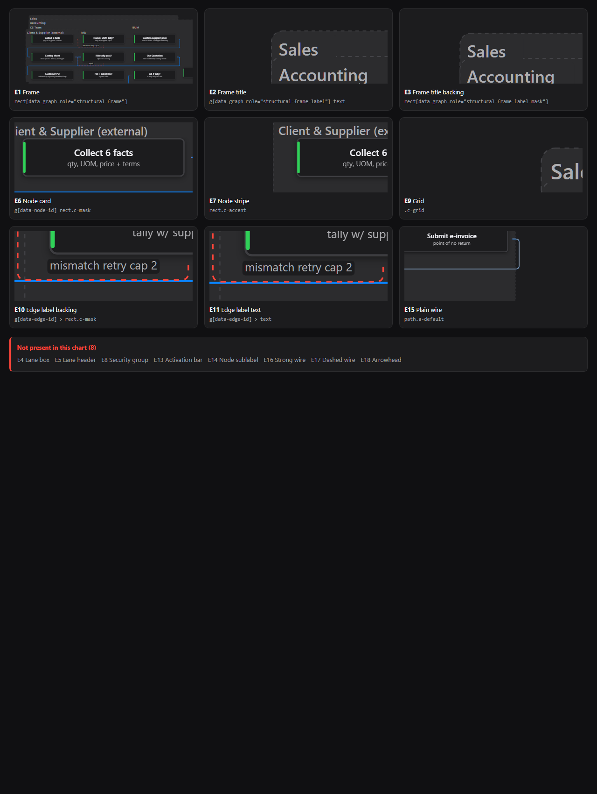
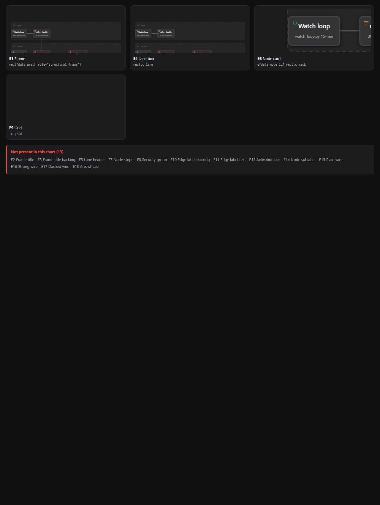
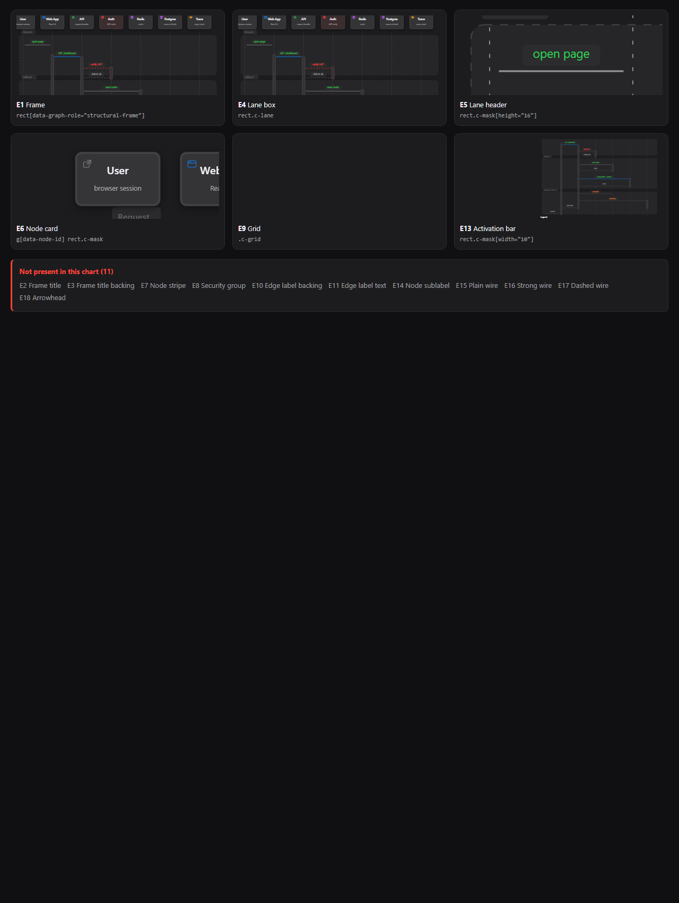
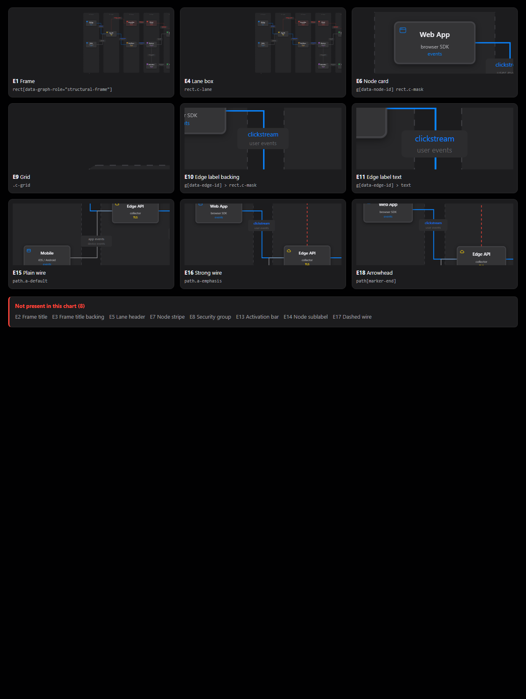

v0.2.0 draft · 2026-09-17 · Benji, read-only consultant. Every element below was found in a real chart and photographed.
| # | Element | Name | Named? | Owned by | Verdict |
|---|---|---|---|---|---|
| E1 | Frame | structural-frame | yes | A7, A9, A14, P1, P2 | FAIL |
| E2 | Frame title | structural-frame-label | yes | A2 | FAIL |
| E3 | Frame title backing | structural-frame-label-mask | yes | P3 | GAP |
| E4 | Lane box | c-lane | no | A3 | PASS |
| E5 | Lane header | lane-header-mask | no | nothing | FAIL |
| E6 | Node card | node-card-mask | no | A2, A8, P1 | PASS |
| E7 | Node stripe | node-accent-bar | no | nothing | FAIL |
| E8 | Security group | security-group | no | P1 | UNUSED |
| E9 | Grid | grid | no | nothing | UNUSED |
| E10 | Edge label backing | edge-label-mask | no | nothing | FAIL |
| E11 | Edge label text | segment-label | yes | A3, A4, A15 | FAIL |
| E12 | Message label backing | message-label-mask | no | nothing | FAIL |
| E13 | Activation bar | activation-bar | no | nothing | FAIL |
| E14 | Node sublabel | node-sublabel | no | A3, A15 | GAP |
| E15 | Plain wire | a-default | no | A9, A11, A12 | PASS |
| E16 | Strong wire | a-emphasis | no | A9, A11, A12 | PASS |
| E17 | Dashed wire | a-dashed | no | nothing tells it from E15 | FAIL |
| E18 | Arrowhead | m-default and three twins | no | A5, A10, A12 | PASS |

sys003-einvoice-structure. Open the live sheet to zoom any element.
watchdog-local-cloud-flow-v2. Open the live sheet to zoom any element.
cache-miss-request. Open the live sheet to zoom any element.
product-analytics. Open the live sheet to zoom any element.agent-run. Open the live sheet to zoom any element.structural-frame FAILrender-architecture.mjs:1033structural-frame-label FAILrender-architecture.mjs:1038structural-frame-label-mask GAPrender-architecture.mjs:1039c-lane PASStemplate.html:5171lane-header-mask FAILrender-workflow.mjs:682node-card-mask PASSall five renderersnode-accent-bar FAILrender-architecture.mjs:1080security-group UNUSEDtemplate.html CSSgrid UNUSEDtemplate.html CSSedge-label-mask FAILall five rendererssegment-label FAILall five renderersmessage-label-mask FAILrender-sequence.mjs:344activation-bar FAILrender-sequence.mjs:354node-sublabel GAPall five renderersa-default PASSall five renderersa-emphasis PASSall five renderersa-dashed FAILall five renderersm-default and three twins PASStemplate.html:5528| # | Rule | Tier | Good | Ours | Verdict |
|---|---|---|---|---|---|
| R1 | Every element has a name | T4 | A rule cannot be written, and a check cannot be built, for a shape with no name. | Four names out of eighteen. | FAIL |
| R2 | One colour token does one job | T4 | Two jobs on one token means no value can be correct. | --mask fills E6 node cards and E10 edge label backings. SEE-008 booked the trap. | FAIL |
| R3 | A backing that belongs to a line is tinted from that line | T4 | A backing on a wire is tinted from that wire, so the eye reads the two as one. | E10 is flat --mask with no tie to its wire. Four variants mocked; V1 recommended. | FAIL |
| R4 | A backing on a line must not erase the line | T4 | The wire stays continuous. The backing sits on it. | The backing exists to erase it. template.html:5551 says so. | FAIL |
| R5 | A border may separate, but may never carry the meaning | T2 | P2 samples ten pixels from any edge and ignores the hairline on purpose. | One element in eighteen has a border. We depend on none. | PASS |
| R6 | Painted colour matches the declared token | T2 | Colour distance of two or less. P3. | Passing since SEE-008 on fresh renders. | PASS |
| R7 | Touching surfaces tell apart | T2 | Colour distance of at least one. P1. | Passing except four known nested same-fill rings. | PASS |
| R8 | The same element is drawn the same way everywhere | T4 | Five drawings of one shape share one corner radius and one height source. | E10 radius 3,4,4,3,3. E6 radius 6,6,7,6,6. Lifecycle is the odd one. | FAIL |
| R9 | Corner radius says what a shape is | T3 | Cards get a bigger radius than labels. Solid against floating. | Cards 6 or 7, labels 3 or 4. The habit exists but is unwritten. | PASS |
| R10 | A wire is told apart by more than one trick | T1 | Meaning never rests on a single visual signal. | E17 and E15 share one colour and one head shape. | FAIL |
| R11 | Every head points the way its wire travels | T2 | Within thirty degrees of the last real piece of route. A12. | Passing on fresh renders since SEE-008. | PASS |
| R12 | Text is big enough to read at desk size | T2 | The readability floors. O1a. | Passing. Card text fit repaired in SEE-013. | PASS |
| Element | Architecture | Workflow | Sequence | Dataflow | Lifecycle |
|---|---|---|---|---|---|
| E1 Frame | yes | yes | yes | yes | — |
| E2 Frame title | yes | — | — | — | — |
| E3 Frame title backing | yes | — | — | — | — |
| E4 Lane box | — | yes | yes | yes | — |
| E5 Lane header | — | — | yes | — | — |
| E6 Node card | yes | yes | yes | yes | yes |
| E7 Node stripe | yes | — | — | — | — |
| E8 Security group | — | — | — | — | — |
| E9 Grid | yes | — | yes | — | — |
| E10 Edge label backing | yes | yes | — | yes | yes |
| E11 Edge label text | yes | yes | — | yes | yes |
| E12 Message label backing | — | — | — | — | — |
| E13 Activation bar | — | — | yes | — | yes |
| E14 Node sublabel | — | yes | yes | yes | yes |
| E15 Plain wire | yes | yes | yes | yes | yes |
| E16 Strong wire | yes | yes | yes | yes | yes |
| E17 Dashed wire | — | yes | yes | yes | — |
| E18 Arrowhead | yes | yes | yes | yes | yes |
--mask into a card token and a label token.Companion files: design-audit.md (same content, text) · the R3 decision page.